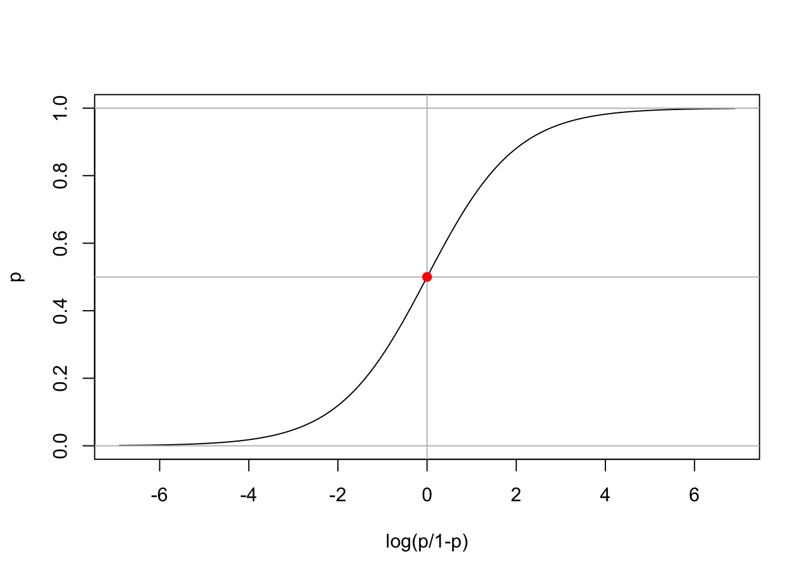
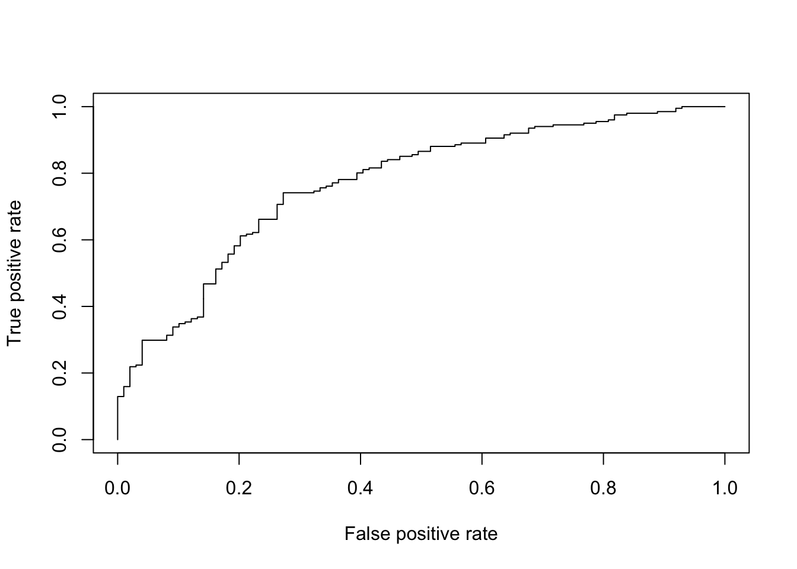
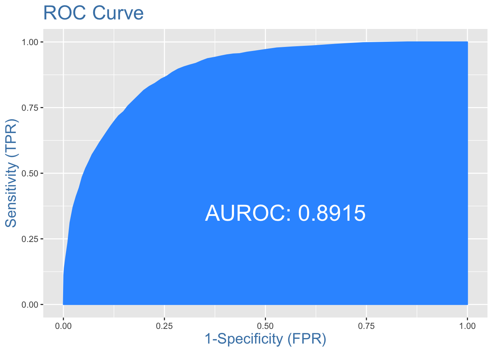
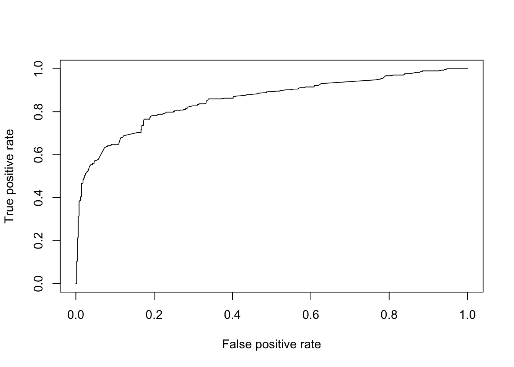

7 Regresión logística
Una regresión logística se utiliza típicamente cuando hay una variable de resultado dicotómica (como ganar o perder), y una variable predictiva continua que está relacionada con la probabilidad o “odds” de la variable de resultado. También se puede utilizar con predictores categóricos y con múltiples predictores.
Si usamos una regresión lineal para modelar una variable dicotómica (como \(Y\)), es posible que el modelo resultante no restrinja los \(Y\) pronosticados dentro de \(0\) y \(1\). Además, otros supuestos de regresión lineal como la normalidad del error pueden ser violados. Así que en vez de eso, modelamos las probabilidades del evento de $log (logit) o logit, donde, \(p\) es la probabilidad del evento.
\[ z_i = \ln(\frac{p_i}{1-p_i}) = \beta_0 + \beta_1 x_1 + ... + \beta_p x_p \]
La ecuación anterior puede ser modelada usando glm() mediante el argumento family="binomial. Pero estamos más interesados en la probabilidad del evento que en las probabilidades logarítmicas del evento. Por lo tanto, los valores pronosticados del modelo anterior, es decir, las probabilidades logarítmicas del evento, pueden convertirse a probabilidad de evento de la siguiente manera:
\[ p_i =1-\frac{1}{1 + \exp(z_i)} \]
A esto se le llama la logit-inversa, ?plogis.
El siguiente gráfico relaciona p y logit(p).
p <- seq(0,1,l=1000)
logitp <- log(p/(1-p))
plot(logitp,p,t='l',xlab="log(p/1-p)")
abline(h=c(0,0.5,1),v=0,col="grey")
points(0,0.5,pch=19,col="red")
7.1 Ejemplo: Datos de crédito en Alemania (Credit scoring)
Cuando un banco recibe una solicitud de préstamo, basada en el perfil del solicitante, el banco tiene que tomar una decisión sobre si procede o no con la aprobación del préstamo. Hay dos tipos de riesgos asociados a la decisión del banco:
Si el solicitante tiene un buen riesgo de crédito, es decir, es probable que pague el préstamo, entonces no aprobar el préstamo a la persona resulta en una pérdida de negocio para el banco.
Si el solicitante tiene un riesgo de crédito malo, es decir, no es probable que pague el préstamo, entonces la aprobación del préstamo a la persona resulta en una pérdida financiera para el banco.
El objetivo de este tipo de análisis es minimizar el riesgo y maximizar el beneficio del banco.
Para minimizar las pérdidas desde la perspectiva del banco, el banco necesita una regla de decisión sobre a quién dar la aprobación del préstamo y a quién no. Los perfiles demográficos y socioeconómicos de un solicitante son considerados por los administradores de préstamos antes de que se tome una decisión sobre su solicitud de préstamo.
Los datos German Credit Data contiene datos sobre 20 variables y la clasificación de si un solicitante es considerado un Bueno o un Malo riesgo de crédito para 1000 solicitantes de préstamos.
Se espera que un modelo predictivo elaborado a partir de estos datos sirva de guía al gerente del banco para tomar una decisión sobre la aprobación de un préstamo a un posible solicitante en función de su perfil.
# German Credit Data
gcreditdata <- read.table("https://archive.ics.uci.edu/ml/machine-learning-databases/statlog/german/german.data", header = FALSE)
colnames(gcreditdata)<-c("account.status","months",
"credit.history","purpose","credit.amount",
"savings","employment","installment.rate","personal.status",
"guarantors","residence","property","age","other.installments",
"housing","credit.cards","job","dependents","phone","foreign.worker","credit.rating")
head(gcreditdata)## account.status months credit.history purpose credit.amount savings
## 1 A11 6 A34 A43 1169 A65
## 2 A12 48 A32 A43 5951 A61
## 3 A14 12 A34 A46 2096 A61
## 4 A11 42 A32 A42 7882 A61
## 5 A11 24 A33 A40 4870 A61
## 6 A14 36 A32 A46 9055 A65
## employment installment.rate personal.status guarantors residence
## 1 A75 4 A93 A101 4
## 2 A73 2 A92 A101 2
## 3 A74 2 A93 A101 3
## 4 A74 2 A93 A103 4
## 5 A73 3 A93 A101 4
## 6 A73 2 A93 A101 4
## property age other.installments housing credit.cards job dependents
## 1 A121 67 A143 A152 2 A173 1
## 2 A121 22 A143 A152 1 A173 1
## 3 A121 49 A143 A152 1 A172 2
## 4 A122 45 A143 A153 1 A173 2
## 5 A124 53 A143 A153 2 A173 2
## 6 A124 35 A143 A153 1 A172 2
## phone foreign.worker credit.rating
## 1 A192 A201 1
## 2 A191 A201 2
## 3 A191 A201 1
## 4 A191 A201 1
## 5 A191 A201 2
## 6 A192 A201 1
Cambie el nombre de algunos niveles de factor:
table(gcreditdata$credit.rating) # Good = 1 / Bad = 2##
## 1 2
## 700 300gcreditdata$credit.rating <- ifelse(gcreditdata$credit.rating==1,1,0)
table(gcreditdata$credit.rating) # Good = 1 / Bad = 0##
## 0 1
## 300 700levels(gcreditdata$account.status) <- c("<0DM","<200DM",">200DM","NoStatus")
levels(gcreditdata$credit.history) <- c("No","Allpaid","Allpaidtillnow","Delayinpaying","Critical")
levels(gcreditdata$purpose) <- c("car(new)","car(used)","furniture/equipment","radio/television","domesticappliances",
"repairs","education","vacation-doesnotexist?","retraining","business","others")
Dividamos los datos en dos grupos (entrenamiento y prueba), 70%/30%.
n<- dim(gcreditdata)[1]
set.seed(1234) # select a random sample with
train <- sample(1:n , 0.7*n)
gcreditdata.test <- gcreditdata[-train,]
gcreditdata.train <- gcreditdata[train,]
ytrain <- gcreditdata$credit.rating[train]
ytest <- gcreditdata$credit.rating[-train]
Un modelo logístico puede ser ajustado con la función glm.
m1 <- glm(credit.rating ~ . , family = binomial, data= gcreditdata.train)
summary(m1)##
## Call:
## glm(formula = credit.rating ~ ., family = binomial, data = gcreditdata.train)
##
## Deviance Residuals:
## Min 1Q Median 3Q Max
## -2.8353 -0.6178 0.3415 0.6729 2.0514
##
## Coefficients:
## Estimate Std. Error z value Pr(>|z|)
## (Intercept) 5.259e-01 1.371e+00 0.384 0.701257
## account.status<200DM 3.532e-01 2.719e-01 1.299 0.193876
## account.status>200DM 8.198e-01 4.626e-01 1.772 0.076353 .
## account.statusNoStatus 1.487e+00 2.782e-01 5.344 9.08e-08 ***
## months -3.687e-02 1.156e-02 -3.189 0.001428 **
## credit.historyAllpaid -1.347e-01 6.539e-01 -0.206 0.836779
## credit.historyAllpaidtillnow 5.296e-01 4.975e-01 1.065 0.287038
## credit.historyDelayinpaying 7.156e-01 5.575e-01 1.284 0.199266
## credit.historyCritical 1.439e+00 5.073e-01 2.837 0.004559 **
## purposecar(used) 1.838e+00 4.856e-01 3.786 0.000153 ***
## purposefurniture/equipment 1.095e+00 9.231e-01 1.186 0.235728
## purposeradio/television 8.879e-01 3.289e-01 2.700 0.006944 **
## purposedomesticappliances 9.928e-01 3.107e-01 3.196 0.001395 **
## purposerepairs 5.399e-01 9.006e-01 0.599 0.548881
## purposeeducation -4.889e-01 6.587e-01 -0.742 0.457933
## purposevacation-doesnotexist? -1.800e-01 4.648e-01 -0.387 0.698616
## purposeretraining 2.093e+00 1.266e+00 1.653 0.098417 .
## purposebusiness 5.772e-01 3.985e-01 1.448 0.147489
## credit.amount -1.107e-04 5.456e-05 -2.028 0.042526 *
## savingsA62 5.219e-01 3.548e-01 1.471 0.141326
## savingsA63 8.722e-01 5.710e-01 1.528 0.126623
## savingsA64 1.746e+00 6.533e-01 2.673 0.007514 **
## savingsA65 1.354e+00 3.350e-01 4.042 5.30e-05 ***
## employmentA72 1.729e-01 5.327e-01 0.324 0.745566
## employmentA73 2.462e-01 5.116e-01 0.481 0.630356
## employmentA74 1.182e+00 5.660e-01 2.089 0.036736 *
## employmentA75 4.924e-02 5.076e-01 0.097 0.922712
## installment.rate -4.157e-01 1.098e-01 -3.787 0.000152 ***
## personal.statusA92 5.279e-02 4.718e-01 0.112 0.910902
## personal.statusA93 6.791e-01 4.577e-01 1.484 0.137906
## personal.statusA94 2.017e-01 5.550e-01 0.363 0.716253
## guarantorsA102 1.880e-01 5.068e-01 0.371 0.710613
## guarantorsA103 1.024e+00 5.814e-01 1.761 0.078259 .
## residence 5.357e-02 1.047e-01 0.512 0.608926
## propertyA122 -4.618e-01 3.142e-01 -1.470 0.141584
## propertyA123 -4.679e-01 2.906e-01 -1.610 0.107366
## propertyA124 -7.642e-01 5.658e-01 -1.351 0.176834
## age 1.872e-02 1.172e-02 1.598 0.110121
## other.installmentsA142 -1.259e-01 5.197e-01 -0.242 0.808648
## other.installmentsA143 3.400e-01 2.892e-01 1.176 0.239669
## housingA152 5.768e-01 2.935e-01 1.965 0.049384 *
## housingA153 7.825e-01 6.261e-01 1.250 0.211387
## credit.cards -3.720e-01 2.456e-01 -1.515 0.129882
## jobA172 -8.402e-01 8.307e-01 -1.011 0.311822
## jobA173 -9.497e-01 7.970e-01 -1.192 0.233388
## jobA174 -9.513e-01 8.262e-01 -1.152 0.249525
## dependents -2.108e-01 3.080e-01 -0.685 0.493620
## phoneA192 4.876e-01 2.556e-01 1.908 0.056400 .
## foreign.workerA202 9.540e-01 7.550e-01 1.264 0.206386
## ---
## Signif. codes: 0 '***' 0.001 '**' 0.01 '*' 0.05 '.' 0.1 ' ' 1
##
## (Dispersion parameter for binomial family taken to be 1)
##
## Null deviance: 839.40 on 699 degrees of freedom
## Residual deviance: 596.11 on 651 degrees of freedom
## AIC: 694.11
##
## Number of Fisher Scoring iterations: 5
Variables significativas:
sig.var<- summary(m1)$coeff[-1,4] <0.01
names(sig.var)[sig.var == TRUE]## [1] "account.statusNoStatus" "months"
## [3] "credit.historyCritical" "purposecar(used)"
## [5] "purposeradio/television" "purposedomesticappliances"
## [7] "savingsA64" "savingsA65"
## [9] "installment.rate"
Con predict podemos predecir con el modelo logístico el conjunto de test.
pred1<- predict.glm(m1,newdata = gcreditdata.test, type="response")
result1<- table(ytest, floor(pred1+0.5))
result1##
## ytest 0 1
## 0 48 51
## 1 25 176error1<- sum(result1[1,2], result1[2,1])/sum(result1)
error1## [1] 0.2533333
Curva ROC con la librería ROCR:
library(ROCR)## Loading required package: gplots##
## Attaching package: 'gplots'## The following object is masked from 'package:stats':
##
## lowesspred = ROCR::prediction(pred1,ytest)
perf <- performance(pred, "tpr", "fpr")
plot(perf)
AUCLog1=performance(pred, measure = "auc")@y.values[[1]]
cat("AUC: ",AUCLog1,"n")## AUC: 0.7699382 n7.2 Ejemplo: Predecir el salario de los trabajadores
Consideremos los datos adult.csv. Intentaremos predecir la variable de respuesta ABOVE50k (Salario >50k) mediante una regresión logística basada en variables demográficas explicativas.
inputData <- read.csv("http://idaejin.github.io/courses/R/data/adult.csv")
head(inputData)## AGE WORKCLASS FNLWGT EDUCATION EDUCATIONNUM MARITALSTATUS
## 1 39 State-gov 77516 Bachelors 13 Never-married
## 2 50 Self-emp-not-inc 83311 Bachelors 13 Married-civ-spouse
## 3 38 Private 215646 HS-grad 9 Divorced
## 4 53 Private 234721 11th 7 Married-civ-spouse
## 5 28 Private 338409 Bachelors 13 Married-civ-spouse
## 6 37 Private 284582 Masters 14 Married-civ-spouse
## OCCUPATION RELATIONSHIP RACE SEX CAPITALGAIN CAPITALLOSS
## 1 Adm-clerical Not-in-family White Male 2174 0
## 2 Exec-managerial Husband White Male 0 0
## 3 Handlers-cleaners Not-in-family White Male 0 0
## 4 Handlers-cleaners Husband Black Male 0 0
## 5 Prof-specialty Wife Black Female 0 0
## 6 Exec-managerial Wife White Female 0 0
## HOURSPERWEEK NATIVECOUNTRY ABOVE50K
## 1 40 United-States 0
## 2 13 United-States 0
## 3 40 United-States 0
## 4 40 United-States 0
## 5 40 Cuba 0
## 6 40 United-States 0Verificar sesgo de clase
Idealmente, la proporción de eventos y no eventos en la variable \(Y\) debería ser aproximadamente la misma. Por lo tanto, primero verifiquemos la proporción de clases en la variable dependiente ABOVE50K.
table(inputData$ABOVE50K)##
## 0 1
## 24720 7841Claramente, existe un sesgo de clase, una condición observada cuando la proporción de eventos es mucho menor que la proporción de no eventos. Por lo tanto, debemos muestrear las observaciones en proporciones aproximadamente iguales para obtener mejores modelos.
Crear Muestras de Entrenamiento y Pruebas
Una manera de abordar el problema del sesgo de clase es muestrear los 0 y 1 para los trainingData (muestra de entrenamiento) en proporciones iguales. Al hacerlo, pondremos el resto de los inputData no incluidos para la formación en testData (muestra de validación). Como resultado, el tamaño de la muestra de entrenamiento será menor que el de la validación, lo que está bien, porque hay un gran número de observaciones (>10K).
# Create Training Data
input_ones <- inputData[which(inputData$ABOVE50K == 1), ] # all 1's
input_zeros <- inputData[which(inputData$ABOVE50K == 0), ] # all 0's
set.seed(100) # for repeatability of samples
input_ones_training_rows <- sample(1:nrow(input_ones), 0.7*nrow(input_ones)) # 1's for training
input_zeros_training_rows <- sample(1:nrow(input_zeros), 0.7*nrow(input_ones)) # 0's for training.
# Pick as many 0's as 1's
training_ones <- input_ones[input_ones_training_rows, ]
training_zeros <- input_zeros[input_zeros_training_rows, ]
trainingData <- rbind(training_ones, training_zeros) # row bind the 1's and 0's
# Create Test Data
test_ones <- input_ones[-input_ones_training_rows, ]
test_zeros <- input_zeros[-input_zeros_training_rows, ]
testData <- rbind(test_ones, test_zeros) # row bind the 1's and 0's Construir modelos de Logit y predecir
logitMod <- glm(ABOVE50K ~ RELATIONSHIP + AGE + CAPITALGAIN + OCCUPATION + EDUCATIONNUM, data=trainingData, family=binomial(link="logit"))## Warning: glm.fit: fitted probabilities numerically 0 or 1 occurredpredicted <- plogis(predict(logitMod, testData)) # predicted scores
# or
predicted <- predict(logitMod, testData, type="response") # predicted scores
Cuando usamos la función de predicción en este modelo, predecirá las probabilidades de la variable \(Y\). Para convertirlo en una probabilidad de predicción que esté entre 0 y 1, usamos el plogis().
Decidir la probabilidad de corte de predicción óptima para el modelo.
El puntaje de probabilidad de la predicción de corte por defecto es de \(0.5\) o la proporción de 1’s y 0’s en los datos de entrenamiento. Pero a veces, afinar el corte de probabilidad puede mejorar la precisión tanto en las muestras de desarrollo como en las de validación. La función InformationValue::optimalCutoff proporciona formas de encontrar el punto de corte óptimo para mejorar la predicción de 1, 0, 1 y 0 y reducir el error de clasificación. Permite calcular la puntuación óptima que minimiza el error de clasificación para el modelo anterior.
library(InformationValue)
optCutOff <- optimalCutoff(testData$ABOVE50K, predicted)[1]
optCutOff## [1] 0.89
Error de clasificación
El error de clasificación errónea es el desajuste porcentual de los valores predefinidos frente a los reales, independientemente de que sean 1 o 0. Cuanto menor sea el error de clasificación, mejor será su modelo.
misClassError(testData$ABOVE50K, predicted, threshold = optCutOff)## [1] 0.0892ROC
Receiver Operating Characteristics a curva traza el porcentaje de verdaderos positivos pronosticados con precisión por un modelo logit dado a medida que la probabilidad de corte de la predicción se reduce de 1 a 0. Para un buen modelo, a medida que se reduce el corte, debería marcar más de 1 real como positivo y menos de 0 real como 1. Por lo tanto, para un buen modelo, la curva debería subir bruscamente, indicando que el TPR (eje Y) aumenta más rápido que el FPR (eje X) a medida que disminuye la puntuación de corte. Cuanto mayor sea el área bajo la curva ROC, mejor será la capacidad de predicción del modelo.
plotROC(testData$ABOVE50K, predicted)
Especificidad y sensibilidad
La Sensibilidad (o Tasa Verdaderos Positivos) es el porcentaje de 1’s (reales) correctamente predichos por el modelo, mientras que, especificidad es el porcentaje de 0’s (reales) correctamente predicho. La especificidad también puede calcularse como 1-Tasa Falsos Positivos.
\[ \text{Sensitivity}=\frac{\#\text{Actual 1's and Predicted as 1's}}{\# \text{of Actual 1's}} \] \[ \text{Specificity}=\frac{\#\text{Actual 0's and Predicted as 0's}}{\# \text{of Actual 0's}} \]
sensitivity(testData$ABOVE50K, predicted, threshold = optCutOff)## [1] 0.3442414specificity(testData$ABOVE50K, predicted, threshold = optCutOff)## [1] 0.9800853Los números anteriores se calculan a partir de la muestra de validación que no se utilizó para la formación del modelo. Así que, una tasa de detección de la verdad de 34.42% en los datos de prueba es bueno.
Matriz de Confusión Las columnas son reales, mientras que las filas son predicciones.
confusionMatrix(testData$ABOVE50K, predicted, threshold = optCutOff)## 0 1
## 0 18849 1543
## 1 383 8107.3 Ejemplo: Datos de los supervivientes del Titanic
El conjunto de datos es una colección de datos sobre algunos de los pasajeros, y el objetivo es predecir la supervivencia (1 si el pasajero sobrevivió o 0 si no lo hizo) basándose en algunas características como la clase de servicio, el sexo, la edad, etc. Como puede ver, vamos a utilizar variables categóricas y continuas.
VARIABLE DESCRIPTIONS:
pclass Passenger Class
(1 = 1st; 2 = 2nd; 3 = 3rd)
survival Survival
(0 = No; 1 = Yes)
name Name
sex Sex
age Age
sibsp Number of Siblings/Spouses Aboard
parch Number of Parents/Children Aboard
ticket Ticket Number
fare Passenger Fare
cabin Cabin
embarked Port of Embarkation
(C = Cherbourg; Q = Queenstown; S = Southampton)
boat Lifeboat
body Body Identification Number
home_dest Home/DestinationDescripción completa (Aquí)
Descarga los datos aquí
Leemos los datos de entreamiento train y test:
train <- read.csv('http://idaejin.github.io/courses/R/data/titanic_train.csv',header=TRUE,row.names=1)
test <- read.csv('http://idaejin.github.io/courses/R/data/titanic_test.csv',header=TRUE,row.names=1)Questions:
Ajustar un modelo logístico con
pclasscomo variable explicativa. ¿Cuál es la interpretación del modelo ajustado?Encontrar el mejor modelo de regresión logística posible basado en todas las variables disponibles.
model <- glm(Survived ~.,family=binomial(link='logit'),data=train)
summary(model)##
## Call:
## glm(formula = Survived ~ ., family = binomial(link = "logit"),
## data = train)
##
## Deviance Residuals:
## Min 1Q Median 3Q Max
## -2.6064 -0.5954 -0.4254 0.6220 2.4165
##
## Coefficients:
## Estimate Std. Error z value Pr(>|z|)
## (Intercept) 5.137627 0.594998 8.635 < 2e-16 ***
## Pclass -1.087156 0.151168 -7.192 6.40e-13 ***
## Sexmale -2.756819 0.212026 -13.002 < 2e-16 ***
## Age -0.037267 0.008195 -4.547 5.43e-06 ***
## SibSp -0.292920 0.114642 -2.555 0.0106 *
## Parch -0.116576 0.128127 -0.910 0.3629
## Fare 0.001528 0.002353 0.649 0.5160
## EmbarkedQ -0.002656 0.400882 -0.007 0.9947
## EmbarkedS -0.318786 0.252960 -1.260 0.2076
## ---
## Signif. codes: 0 '***' 0.001 '**' 0.01 '*' 0.05 '.' 0.1 ' ' 1
##
## (Dispersion parameter for binomial family taken to be 1)
##
## Null deviance: 1065.39 on 799 degrees of freedom
## Residual deviance: 709.39 on 791 degrees of freedom
## AIC: 727.39
##
## Number of Fisher Scoring iterations: 5anova(model, test="Chisq")## Analysis of Deviance Table
##
## Model: binomial, link: logit
##
## Response: Survived
##
## Terms added sequentially (first to last)
##
##
## Df Deviance Resid. Df Resid. Dev Pr(>Chi)
## NULL 799 1065.39
## Pclass 1 83.607 798 981.79 < 2.2e-16 ***
## Sex 1 240.014 797 741.77 < 2.2e-16 ***
## Age 1 17.495 796 724.28 2.881e-05 ***
## SibSp 1 10.842 795 713.43 0.000992 ***
## Parch 1 0.863 794 712.57 0.352873
## Fare 1 0.994 793 711.58 0.318717
## Embarked 2 2.187 791 709.39 0.334990
## ---
## Signif. codes: 0 '***' 0.001 '**' 0.01 '*' 0.05 '.' 0.1 ' ' 1mod1 <- glm(Survived ~ as.factor(Pclass), family=binomial, data=train)
summary(mod1)##
## Call:
## glm(formula = Survived ~ as.factor(Pclass), family = binomial,
## data = train)
##
## Deviance Residuals:
## Min 1Q Median 3Q Max
## -1.3787 -0.7515 -0.7515 0.9887 1.6747
##
## Coefficients:
## Estimate Std. Error z value Pr(>|z|)
## (Intercept) 0.4616 0.1474 3.131 0.00174 **
## as.factor(Pclass)2 -0.5455 0.2138 -2.551 0.01074 *
## as.factor(Pclass)3 -1.5816 0.1844 -8.575 < 2e-16 ***
## ---
## Signif. codes: 0 '***' 0.001 '**' 0.01 '*' 0.05 '.' 0.1 ' ' 1
##
## (Dispersion parameter for binomial family taken to be 1)
##
## Null deviance: 1065.39 on 799 degrees of freedom
## Residual deviance: 979.94 on 797 degrees of freedom
## AIC: 985.94
##
## Number of Fisher Scoring iterations: 4anova(mod1,test="Chisq")## Analysis of Deviance Table
##
## Model: binomial, link: logit
##
## Response: Survived
##
## Terms added sequentially (first to last)
##
##
## Df Deviance Resid. Df Resid. Dev Pr(>Chi)
## NULL 799 1065.39
## as.factor(Pclass) 2 85.452 797 979.94 < 2.2e-16 ***
## ---
## Signif. codes: 0 '***' 0.001 '**' 0.01 '*' 0.05 '.' 0.1 ' ' 1efecto de interacción entre la clase de pasajero y el sexo, ya que la clase de pasajero mostró una diferencia mucho mayor en la tasa de supervivencia entre las mujeres en comparación con los hombres (es decir, las mujeres de clase superior tenían muchas más probabilidades de sobrevivir que las mujeres de clase inferior, mientras que los hombres de primera clase tenían más probabilidades de sobrevivir que los hombres de segunda o tercera clase, pero no por el mismo margen que las mujeres).
mod2 <- glm(Survived ~ Pclass + Sex + Age + SibSp, family = binomial(logit), data = train)
summary(mod2)##
## Call:
## glm(formula = Survived ~ Pclass + Sex + Age + SibSp, family = binomial(logit),
## data = train)
##
## Deviance Residuals:
## Min 1Q Median 3Q Max
## -2.6595 -0.6125 -0.4247 0.6149 2.4302
##
## Coefficients:
## Estimate Std. Error z value Pr(>|z|)
## (Intercept) 5.05604 0.50130 10.086 < 2e-16 ***
## Pclass -1.14391 0.12585 -9.089 < 2e-16 ***
## Sexmale -2.75564 0.20471 -13.461 < 2e-16 ***
## Age -0.03725 0.00812 -4.588 4.48e-06 ***
## SibSp -0.33075 0.10892 -3.037 0.00239 **
## ---
## Signif. codes: 0 '***' 0.001 '**' 0.01 '*' 0.05 '.' 0.1 ' ' 1
##
## (Dispersion parameter for binomial family taken to be 1)
##
## Null deviance: 1065.39 on 799 degrees of freedom
## Residual deviance: 713.43 on 795 degrees of freedom
## AIC: 723.43
##
## Number of Fisher Scoring iterations: 5anova(mod2,test="Chisq")## Analysis of Deviance Table
##
## Model: binomial, link: logit
##
## Response: Survived
##
## Terms added sequentially (first to last)
##
##
## Df Deviance Resid. Df Resid. Dev Pr(>Chi)
## NULL 799 1065.39
## Pclass 1 83.607 798 981.79 < 2.2e-16 ***
## Sex 1 240.014 797 741.77 < 2.2e-16 ***
## Age 1 17.495 796 724.28 2.881e-05 ***
## SibSp 1 10.842 795 713.43 0.000992 ***
## ---
## Signif. codes: 0 '***' 0.001 '**' 0.01 '*' 0.05 '.' 0.1 ' ' 1mod3 <- glm(Survived ~ Pclass + Sex + Pclass:Sex + Age + SibSp, family = binomial(logit), data = train)
summary(mod3)##
## Call:
## glm(formula = Survived ~ Pclass + Sex + Pclass:Sex + Age + SibSp,
## family = binomial(logit), data = train)
##
## Deviance Residuals:
## Min 1Q Median 3Q Max
## -3.1993 -0.6265 -0.4770 0.4485 2.3093
##
## Coefficients:
## Estimate Std. Error z value Pr(>|z|)
## (Intercept) 7.606411 0.960804 7.917 2.44e-15 ***
## Pclass -2.108360 0.316024 -6.672 2.53e-11 ***
## Sexmale -5.887480 0.920417 -6.397 1.59e-10 ***
## Age -0.038063 0.008498 -4.479 7.50e-06 ***
## SibSp -0.310269 0.109370 -2.837 0.004556 **
## Pclass:Sexmale 1.254202 0.338241 3.708 0.000209 ***
## ---
## Signif. codes: 0 '***' 0.001 '**' 0.01 '*' 0.05 '.' 0.1 ' ' 1
##
## (Dispersion parameter for binomial family taken to be 1)
##
## Null deviance: 1065.39 on 799 degrees of freedom
## Residual deviance: 695.66 on 794 degrees of freedom
## AIC: 707.66
##
## Number of Fisher Scoring iterations: 6anova(mod3,test="Chisq")## Analysis of Deviance Table
##
## Model: binomial, link: logit
##
## Response: Survived
##
## Terms added sequentially (first to last)
##
##
## Df Deviance Resid. Df Resid. Dev Pr(>Chi)
## NULL 799 1065.39
## Pclass 1 83.607 798 981.79 < 2.2e-16 ***
## Sex 1 240.014 797 741.77 < 2.2e-16 ***
## Age 1 17.495 796 724.28 2.881e-05 ***
## SibSp 1 10.842 795 713.43 0.000992 ***
## Pclass:Sex 1 17.779 794 695.66 2.481e-05 ***
## ---
## Signif. codes: 0 '***' 0.001 '**' 0.01 '*' 0.05 '.' 0.1 ' ' 1En los pasos anteriores, evaluamos brevemente el ajuste del modelo, ahora nos gustaría ver cómo lo está haciendo el modelo al predecir \(y\) en un nuevo conjunto de datos. Estableciendo el parámetro type='response', R producirá probabilidades en la forma de \(P(y=1|X)\). Nuestro límite de decisión será de \(0.5\).
Si \(P(y=1|X) > 0.5\) entonces \(y = 1\) en caso contrario \(y=0\). Tener en cuenta que para algunas aplicaciones diferentes límites de decisión podría ser una mejor opción.
fitted.results <- predict(mod3,newdata=test,type='response')
fitted.results <- ifelse(fitted.results > 0.5,1,0)
misClasificError <- mean(fitted.results != test$Survived)
print(paste('Accuracy',1-misClasificError))## [1] "Accuracy 0.8075"La precisión de 0.8075 en el conjunto de test es un buen resultado. Sin embargo, hay que tener en cuenta que este resultado depende en cierta medida de la división manual de los datos que hice anteriormente, por lo tanto, si deseamos una puntuación más precisa, sería mejor realizar algún tipo de validación cruzada, como la validación cruzada k-fold.
Evaluar la capacidad predictiva
library(ROCR)
p <- predict(mod3, newdata=subset(test,select=c(2,3,4,5,6,7,8)), type="response")
pr <- ROCR::prediction(p, test$Survived)
prf <- performance(pr, measure = "tpr", x.measure = "fpr")
plot(prf)
auc <- performance(pr, measure = "auc")
auc <- auc@y.values[[1]]
auc## [1] 0.8543155